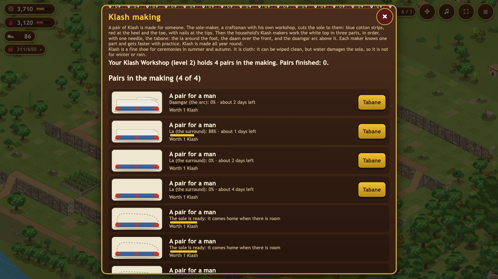

Household
The household is your family. Its members grow up over the years: children stay home, youths and adults can work or guard, elders work at half strength. Each Gathering Hearth makes room for one more member.

Every member has one task:
- Work: the fields, gardens, herd and roofs. The more of the family at work, the more every farm and garden produces, and the more roof jobs can be done in a day.
- Klash: making the Klash shoes, all year round. Each maker works one part of the pair (see Klash making below).
- Guard: youths and adults only. Guards keep eagles away from the flock, defend the village against wolves and bears, and go out on raids. A guard is not working.
Some villages add their own task: fishing in the Sirwan at Hajij, or carrying ice down from the mountain at Hawraman Takht.
Size of the household
Room for 5 members, plus 1 per Diwan-khana level and 1 per Gathering Hearth. A child is born in spring when there is room and the last winter was not hungry; a child becomes a youth after 4 years, and an adult after as many more.
| Age | Work | Can guard |
|---|---|---|
| child | no | no |
| youth | 1× | yes |
| adult | 1× | yes |
| elder | 0.5× | no |
Klash making
A pair is made all year round, in four parts. You order the sole from the sole-maker, a craftsman in his own workshop, for walnuts; he cuts it to the one who will wear it, in blue cotton strips with red at the heel and the toe (3 days). At home the household's makers work the white top with one needle, the tabane: first the la, the crochet-like surround (2 days for a skilled maker), then the daam, the flat lines of the front (1), then the daamgar, the arc above it (1). Each maker knows one part, as in a real family. A beginner works at about 35% of a skilled maker's pace and becomes skilled after about 45 days of practice at that part. Open Klash making from the Household panel or the Klash Workshop.
| Pair | Sole (walnuts) | Work, skilled (days) | Worth (Klash) |
|---|---|---|---|
| Child | 20 | 2.4 | 0.6 |
| Woman | 30 | 3.4 | 0.85 |
| Man | 40 | 4 | 1 |

A pair for a child is quicker to make and worth less than one for a man. While Keep ordering soles is on, a new sole is ordered whenever there is room. The home has room for 2 / 3 / 4 / 5 pairs in the making (without a Klash Workshop, then at its levels 1 to 3), and as many again can wait at the sole-maker. In the panel you can tap along with the tabane: a part made with care makes the pair worth more, up to 50% more when every part was made with care.
Guard skills
Learning a skill costs juice and needs the Meydan level shown. A Dog handler fights as a shepherd and brings 2 dogs; a beaten dog hurts nobody at home.
| Skill | Learn | Meydan | Health | Damage | Range | |
|---|---|---|---|---|---|---|
 | Shepherd | everyone has it | 1 | 55 | 8 | 0.75 |
 | Dog handler | 100 | 1 | 55 | 8 | 0.75 |
 | Slinger Girl | 140 | 2 | 46 | 9 | 4 |
 | Club fighter | 180 | 2 | 270 | 22 | 0.9 |
 | Beekeeper | 230 | 3 | 130 | 9 | 0.85 |
 | Jabaar | 460 | 3 | 640 | 15 | 0.95 |
 | Horse Rider | 320 | 3 | 200 | 19 | 0.9 |
Hurt guards and healing food
A guard beaten in a fight rests for 3 days and does not work or guard. Healing food (honey, ghee and broth) puts them back on their feet at once for 2 Klash per day of rest left.
Eagles
Golden eagles of the high cliffs take a chicken or a kid now and then, most in spring and on the mountain. Every guard, a Kennel and a tamed eagle lower the chance. Now and then in spring an eaglet falls from a cliff nest: raise it on eggs or meat for 45 days and it fights beside your guards.